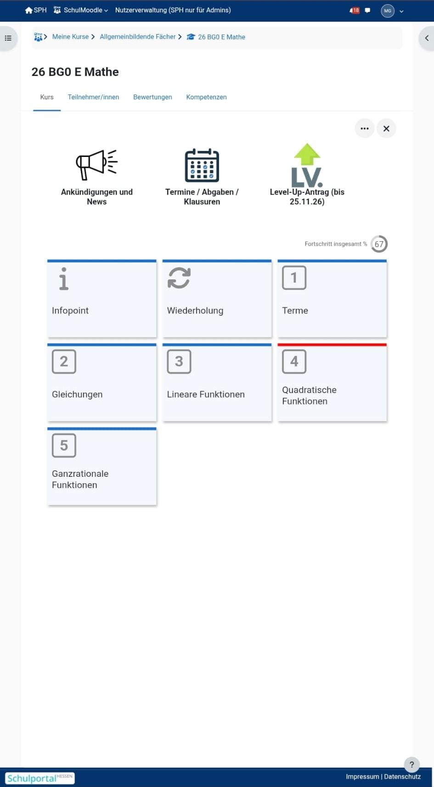

Dein Peer-Guide für den Start – einfach erklärt von Schüler:innen für Schüler:innen
Arbeitsplan
Worum geht's?
Der Arbeitsplan zeigt dir, welche Aufgaben du in einem bestimmten Zeitraum erledigen musst, und ersetzt oft das klassische Tafelbild.
So geht's
Aufgaben auf dem Plan durchlesen und den Umfang einschätzen.
Entscheiden, welche Aufgaben du analog (auf Papier) oder digital bearbeitest.
Erledigte Aufgaben abhaken, um den Überblick zu behalten.
Unser Tipp
Frag nach analogen Arbeitsblättern, wenn dir langes Arbeiten am Bildschirm schwerfällt.
Arbeitsweise
Worum geht's?
In den KooL-Fächern (Deutsch, Mathematik, Englisch) gibt es nur gelegentlich kurze Inputs (Frontalunterricht). Die meiste Zeit arbeitest du selbstständig oder in Gruppen.
So geht's
Aufgabenstellung genau lesen.
Entscheiden, ob du die Aufgabe alleine oder im Team bearbeitest.
Konzentriert an deinem Ziel arbeiten und Zwischenergebnisse sichern.
Unser Tipp
Sucht euch Gruppen, in denen alle dasselbe Ziel haben – oder arbeitet alleine, wenn ihr so besser vorankommt.
Stundenplan
Worum geht's?
Am Anfang bekommst du einen großen Gesamtstundenplan, auf dem auch Kurse stehen, die du gar nicht belegt hast.
So geht's
Alle Fächer und Kurse streichen, die du nicht gewählt hast.
Bei Naturwissenschaften und Wahlkursen die endgültige Einteilung abwarten.
Deinen eigenen, übersichtlichen Plan zusammenstellen.
Unser Tipp
Schreib dir deinen persönlichen Stundenplan direkt sauber ab oder speichere ihn als Hintergrundbild auf dem Tablet.
Moodle (Lernplattform)
Worum geht's?
Moodle ist unsere zentrale digitale Lernplattform, auf der alle Arbeitsmaterialien, Termine und Themenblöcke übersichtlich als Kacheln aufgebaut sind.
So geht's
Über das Schulportal mit deinen Zugangsdaten einloggen und das gewünschte Fach auswählen.
Oben unter „Ankündigungen“ und „Termine / Abgaben“ prüfen, was aktuell ansteht.
Die nummerierte Themen-Kachel (zum Beispiel 1, 2, 3 …) anklicken und das Arbeitsmaterial öffnen.

Hier erscheint der Moodle-Screenshot, sobald die Datei moodle.jpeg im selben Ordner wie diese Seite liegt.
So sieht ein Moodle-Kurs aus: Oben stehen die Ankündigungen und die Termine mit Abgaben. Darunter ist jedes Thema eine nummerierte Kachel – ein Klick öffnet das zugehörige Arbeitsmaterial.
Unser Tipp
Nutze ein iPad oder einen Laptop für die Übersicht – und wenn der Login hakt, wende dich direkt an deine Lehrkraft (oder IT-Lehrkräfte).
Kernzeiten & Zeiteinteilung
Worum geht's?
In den Kernzeiten entscheidest du selbst, an welchem Fach und welcher Aufgabe du gerade arbeitest.
So geht's
Zu Beginn der Stunde festlegen, welches Fach heute Priorität hat.
Wichtige und schwere Aufgaben zuerst erledigen.
Am Ende prüfen, ob du dein Tagesziel erreicht hast.
Unser Tipp
Teile deine Zeit bewusst ein und verschiebe wichtige Aufgaben nicht auf das Ende der Woche.
Raumwahl & Orientierung
Worum geht's?
Je nach Arbeitsphase kannst du verschiedene Lernräume nutzen – das Schulgebäude ist am Anfang aber groß und unübersichtlich.
So geht's
Auf dem Raumplan nachsehen, welche Räume für deine Stufe freigegeben sind.
Ruhige Arbeitsbereiche für Einzelarbeit und Gruppenräume für Teams wählen.
Dich beim Verlassen des Klassenraums abmelden.
Unser Tipp
Bitte deine Lehrkräfte am Anfang um einen kurzen Rundgang durch das Gebäude und frag Mitschüler:innen nach dem Weg.
Häufige Anfangsschwierigkeiten (FAQ)
„Ich weiß nicht, wie ein Kolloquium oder Coachinggespräch abläuft.“
Frage frühzeitig bei deinen Lehrer:innen nach einer kurzen Erklärung zum genauen Ablauf, bevor die Gespräche starten.
„Mir ist die Klasse oder der Raum zu groß und unruhig.“
Nutze die freigegebenen, ruhigeren Lernzonen außerhalb des Hauptraums, um konzentriert zu arbeiten.